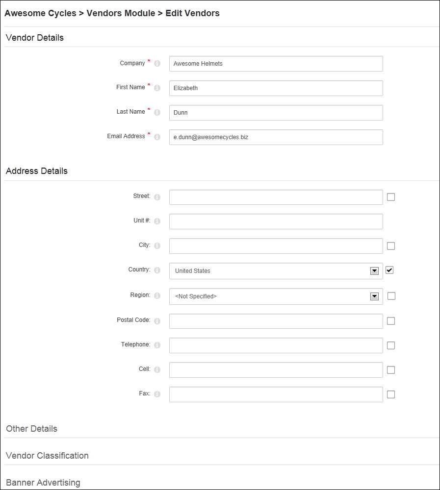

Adding a New Vendor
How to add a vendor account using the Vendors module. Note: Mandatory fields are indicated with an asterisk ( * ). Where a check box is displayed beside a field, to make the field optional - OR - to make the field mandatory.
- Click the Add New Vendor link. This opens the Edit Vendors page.
- In the Vendor Details section, complete all of these fields:
- In the Company* text box, enter the company name of the vendor.
- In the First Name* text box, enter the first name of the contact person for the vendor.
- In the Last Name* text box, enter the last name of the contact person for the vendor.
- In the Email Address* text box, enter the email address of the contact person listed above.
- Optional. In the Address Details section, complete the address details. Note: Address field names and required details may vary.
- In the Street text box, enter the street part of the Vendor's address. E.g. 10 Main Road
- In the Unit # text box, enter the unit number. E.g. Unit 6, or Suite 6, etc.
- In the City text box, enter the Vendor's city. E.g. Melbourne
- At Country, select the Vendor's country.
- In the Region text box, enter the Region/State/Province of the Vendor - OR - select from the drop down list where available. (See Host > Lists for more details on creating regions for countries).
- In the Postal Code text box, enter the Vendor's postal code. E.g. 31234
- In the Telephone text box, enter the Vendor's telephone number. E.g. +61 3 9421 6555
- In the Cell text box, enter the Vendor's cell (mobile) number. E.g. 0400 100 100
- In the Fax text box, enter the Vendor's facsimile number. E.g. + 61 3 9421 6444
- In the Other Details section, the following optional field is available:
- In the Website text box, enter the Vendor's website address. E.g.
http://www.domain.com.
-
Click the Update button.

Tip: Once a new vendor is created the following additional settings will be available vendor logo, authorization, classifications, banner advertising, and affiliate referrals. To complete these additional fields, you must edit the vendor record.